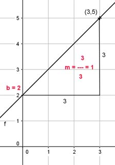

Lineare Funktionen Aufgabe 24 Ermitteln Sie die Gleichung der Geraden, wenn gegeben ist: P(3|5); b = 2 Gesucht ist eine Funktionsgleichung der Form y = mx + b mit der Steigung m und dem Abschnitt b auf der y-Achse. P(3|5) x y Punktkoordinaten und b in y = mx + b eingesetzt: 5 = 3 * m + 2 |-2 3 = 3m |:3 m = 1 y = x + 2 